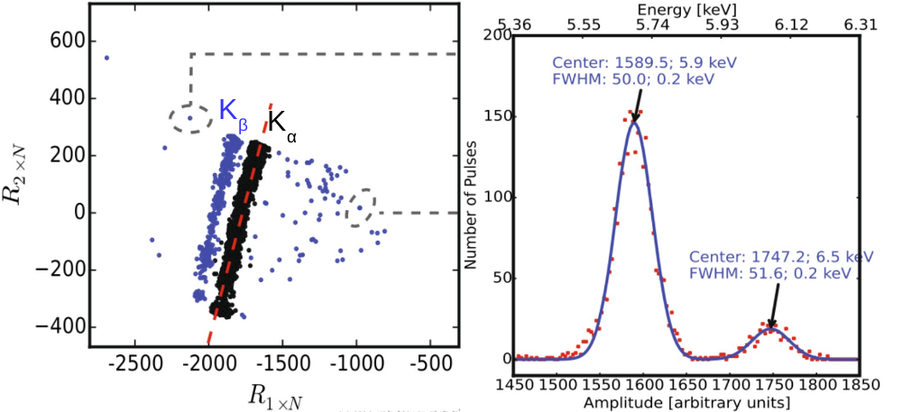
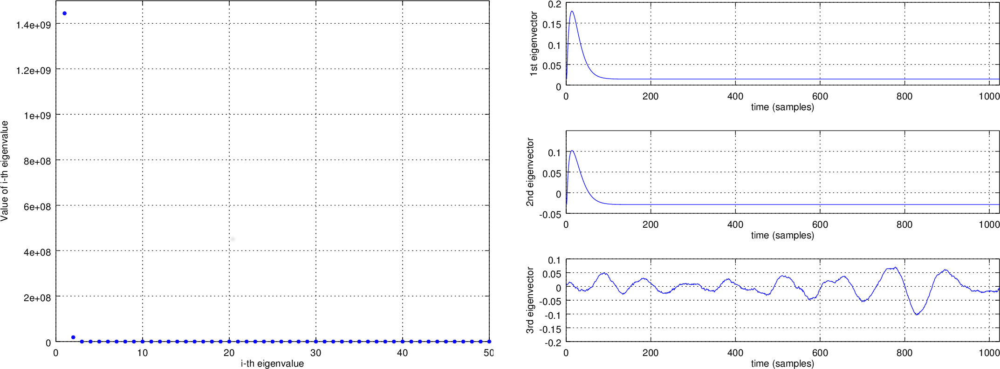
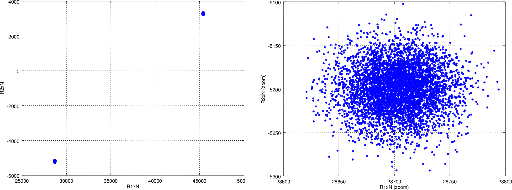
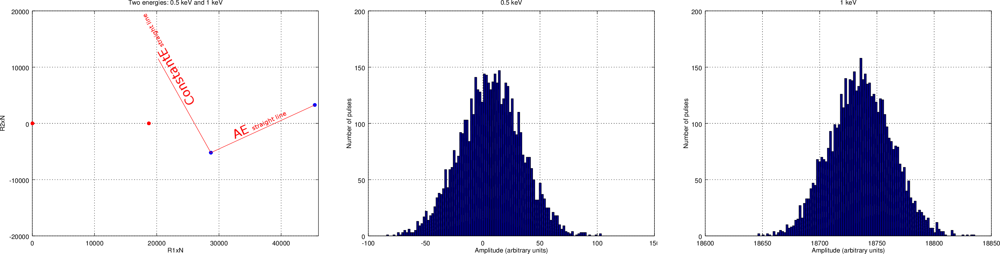

SIRENA description¶
Purpose¶
SIRENA (Software Ifca for Reconstruction of EveNts for Athena X-IFU) is a software package developed to reconstruct the energy of the incoming X-ray photons after their detection in the X-IFU TES detector. This is done by means of a tool called tesreconstruction, which is mainly a wrapper to pass a data file to the SIRENA tasks.
SIRENA is integrated in the SIXTE end-to-end simulations environment where it currently runs over SIXTE or XIFUSIM (available for the XIFU consortium members upon request at sixte-xifusim@lists.fau.de) simulated data. In the  folder of the SIXTE environment, a straightforward SIRENA tutorial and a set of scripts can be found with the aim of providing the user with a first approach running SIRENA.
folder of the SIXTE environment, a straightforward SIRENA tutorial and a set of scripts can be found with the aim of providing the user with a first approach running SIRENA.
The SIRENA software is regularly updated in the SIXTE environment and beta versions are often uploaded to a (SIRENA GitHub repository).
Files¶
Auxiliary Files¶
All the reconstruction methods used by SIRENA software rely on the existence of a library created from a set of data calibration files. In addition, some methods require also a file with the noise data. Let’s describe these auxiliary files in detail.
Noise file¶
The detector noise file is currently obtained from a long stream of pulse-free (noise) simulated data. This stream is ingested in the tool gennoisespec, which generates the spectrum of this simulated noise.
1) Calibration Stream Simulation
The first step is creating a photon list (not required if is already available one with no pulses):
tesconstpileup(SIXTE): which creates a piximpact file of zero-energy events.
> tesconstpileup PixImpList=noise.piximpact XMLFile=tes.XML tstop=simulationTime energy=0 \
pulseDistance=1 triggersize=10000


Piximpact file of no events.¶
The second step is simulating the noise stream. This can be done by choosing either a SIXTE tool (tessim) or a XIFUSIM tool (xifusim), both of them simulating the fake impacts through the detector’s physics and creating data stream splitted into records:
tessim([Wilms+16])(SIXTE): use option triggertype=noise.
> tessim PixID=pixelNumber PixImpList=noise.piximpact Streamfile=noise.fits tstart=0. \
tstop=simulationTime triggertype=noise triggersize=10000 prebuffer=0 \
PixType=file:${SIXTE}/share/sixte/instruments/athena-xifu/newpix_LPA75um.fits \
acbias=yes
xifusim(XIFUSIM): use option simnoise=y.
> xifusim PixImpList=noise.piximpact Streamfile=noise.fits tstop=simulationTime acbias=no\
XMLfilename=myfileXF.xml trig_reclength=10000 sample_rate=156250 simnoise=y

- 1
If
xifusim(XIFUSIM) is used, the noise records are in the TESRECORDS HDU (Header Data Unit) among others HDUs such as GEOCHANNELPARAM, TESPARAM, SQUIDPARAM,…
2) Noise spectrum and weight matrices generation
In gennoisespec, the data is analysed record by record: if there are events present, this tool finds and rejects them, keeping only the pulse-free intervals of a size given by the input parameter intervalMinSamples (the hidden pulse_length input parameter establishes which part of the record is rejected due to a found pulse). If no events are present, the record is divided into pulse-free intervals sized also by this parameter.
Once the pulse-free intervals have been defined, a long noise interval is built by putting together these pulse-free intervals in order to calculate the noise baseline. Moreover, if rmNoiseInterval = yes the noise intervals whose standard deviation is too high are discarded.
On one hand, the tool calculates the FFT of the non-discarded pulse-free intervals (over the unfiltered data) and averages them. Only a specific number of intervals (input parameter nintervals) will be used. The noise spectrum density is stored in the NOISE and NOISEALL HDUs in the noise data file.
> gennoisespec inFile=noise.fits outFile=noiseSpec.fits intervalMinSamples=pulseLength \
nintervals=1000 pulse_length=pulseLength

Noise spectrum (see noise file description)¶
On the other hand, if weightMS = yes the tool calculates the covariance matrix of the noise,  , whose elements are expectation values (
, whose elements are expectation values (![E[·]](_images/math/d8806491007c294e559fd064039b48081ffb240c.png) ) of two-point products for a pulse-free data sequence
) of two-point products for a pulse-free data sequence  (over the unfiltered data) ([FowlerAlpertDoriese+15])
(over the unfiltered data) ([FowlerAlpertDoriese+15])
![V_{ij}=E[d_i d_j]-E[d_i]E[d_j]](_images/math/02195ae06cdbdae8f551ef1893cc35622b70e3b6.png)
The weight matrix is the inverse of the covariance matrix,  . The weight matrixes, Wx, for different lenghts are stored in the WEIGHTMS HDU in the noise data file. The lengths x will be base-2 values and will vary from the base-2 system value closest-lower than or equal-to the
. The weight matrixes, Wx, for different lenghts are stored in the WEIGHTMS HDU in the noise data file. The lengths x will be base-2 values and will vary from the base-2 system value closest-lower than or equal-to the intervalMinSamples decreasing until 2.

Noise weight matrix (see noise file description)¶
gennoisespec also adds the BSLN0 and NOISESTD keywords to the NOISE HDU in the noise data file. They store the mean and the standard deviation of the noise (by working with the long noise interval).
If the noise spectrum or the weight matrixes are to be created from a data stream containing pulses, care should be taken with the parameters scaleFactor, samplesUp and nSgms responsible of the detection process.
The sampling rate is calculated by using some keywords in the input FITS file. In case of tessim simulated data files, using the DELTAT keyword samplingRate=1/deltat. In case of xifusim simulated data files, every detector type defines a master clock-rate TCLOCK and the sampling rate is calculated either from a given decimation factor DEC_FAC (FDM and NOMUX) as samplingRate=1/(tclock·dec_fac), or from the row period P_ROW and the number of rows NUMROW (TDM) as samplingRate=1/(tclock·numrow·p_row). In case of old simulated files, the sampling rate could be read from the HISTORY keyword in the Primary HDU. If the sampling frequency can not be get from the input file after all, a message will ask the user to include the DELTAT keyword (inverse of the sampling rate) in the input FITS file before running again.
Template Library¶
The library purpose is to store detector pulse magnitudes (templates, covariance matrices, optimal filters) at different calibration energies, so that they could be used afterwards for the reconstruction of input pulses of unknown energy.
To build this library, a bunch of monochromatic pulses at different energies are simulated by tesconstpileup (which now creates a piximpact file with pairs of constant separation pulses) and either tessim or xifusim (which simulate the detector physics).
1) Calibration Files simulation
Typical run commands to create these calibration files for a given energy monoEkeV and a given (large) separation in samples between the pulses would be:
> tesconstpileup PixImpList=calib.piximpact XMLFile=tes.XML timezero=3.E-7\
tstop=simulationTime offset=-1 energy=monoEkeV pulseDistance=separation\
TriggerSize=tsize sample_freq=156250
where simulationTime should be large enough to simulate around 20000 isolated pulses and tsize is the size of every simulation stream containing the two separated pulses.
As in the noise simulation, either SIXTE (tessim) or XIFUSIM (xifusim) are eligible:
> tessim PixID=pixelNumber PixImpList=calib.piximpact Streamfile=calib.fits tstart=0. \
tstop=simulationTime triggertype='diff:3:100:supress' triggerSize=recordSize \
PixType=file:${SIXTE}/share/sixte/instruments/athena-xifu/newpix_LPA75um.fits acbias=yes
where suppress is the time (in samples) after the triggering of an event, during which tessim will avoid triggering again (see figure below).
> xifusim PixImpList=calib.piximpact Streamfile=calib.fits tstart=0. tstop=5000. \
XMLfilename=myfileXF.xml trig_reclength=tsize trig_n_pre=1000 trig_thresh=60. \
trig_n_suppress=8192 acbias=no sample_rate=156250 simnoise=y
- 2
Previous figure is equivalent in
xifusimreplacing triggerSize, suppress and PreBufferSize by trig_reclength, trig_n_suppress and trig_n_pre respectively.
The SIXTE simulated calibration files are now FITS files with only one HDU called RECORDS 3 populated with four columns: TIME (arrival time of the event), ADC (digitized current), PIXID (pixel identification) and PH_ID (photon identification, for debugging purposes only).

Records in calibration file by using tessim.¶
- 3
If XIFUSIM is used, the calibration files have not only the TESRECORDS HDU with the events records but also others such as GEOCHANNELPARAM, TESPARAM, SQUIDPARAM, WFEEPARAM, DREPARAM, ADCPARAM and TRIGGERPARAM.
2) Library construction
Once the calibration files (for all the 1..N calibration energies) have been created, the library is built through the wrapper tool tesreconstruction. To run it using SIRENA code:
> tesreconstruction Recordfile=calib.fits TesEventFile=evtcal.fits largeFilter=8192 \
LibraryFile=library.fits opmode=0 clobber=yes monoenergy=monoEeV_1 EventListSize=1000\
NoiseFile=noiseSpec.fits scaleFactor=sF samplesUp=sU nSgms=nS \
hduPRECALWN=yes/no hduPRCLOFWM=yes/no
[.....]
> tesreconstruction Recordfile=calib.fits TesEventFile=evtcal.fits largeFile=8192\
LibraryFile=library.fits opmode=0 clobber=yes monoenergy=monoEeV_N EventListSize=1000\
NoiseFile=noiseSpec.fits scaleFactor=sF samplesUp=sU nSgms=nS \
hduPRECALWN=yes/no hduPRCLOFWM=yes/no
The parameters of tesreconstruction for the library creation process are:
opmode: should be set to 0 if tool is used for library creation.RecordFile: record FITS file.TesEventFile: output event list FITS file.NoiseFile: noise spectrum FITS file.LibraryFile: calibration library FITS file.scaleFactor,samplesUpandnSgms: parameters involved in the pulse detection process.
largeFilter: length (in samples) of the longest fixed filter. If the interval size (intervalMinSamples) used to create the noise is larger that this value, noise will be decimated accordingly when used to pre-calculate the optimal filters or the covariance matrices. If it is shorter, an error will be raised.preBuffer: some samples added before the starting time of a pulse.EnergyMethod: energy calculation Method: OPTFILT (Optimal filtering), WEIGHT (Covariance matrices), WEIGHTN (Covariance matrices, first order), I2R and I2RFITTED (Linear Transformations), or PCA (Principal Component Analysis).Ifit: constant to apply the I2RFITTED conversionmonoenergy: the monochromatic energy of the calibration pulses used to create the current row in the library.hduPRECALWNandhduPRCLOFWM: parameters to create or not the corresponding HDUs.LrsTandLbT: running sum filter length and baseline averaging length.tstartPulse1andtstartPulse2andtstartPulse3: start time (in samples) of the first, second and third pulse in the record (0 if detection should be performed by the system; greater than 0 if provided by the user).intermediateanddetectFile: write intermediate file and name of this intermediate file.
3) Library structure
The library FITS file has 3 HDUs called LIBRARY, FIXFILTT, FIXFILTF which are always present, and other 2 HDUs PRECALWN and PRCLOFWM which are optional depending on the input parameters hduPRECALWN and hduPRCLOFWM.
LIBRARY contains the following columns:
ENERGY: energies (in eV) in the library
PHEIGHT: pulse heights of the templates
PULSE: templates (obtained averaging many signals) with baseline. Its length is the base-2 value closest-lower than or equal-to the
largeFilterPLSMXLFF: long templates according to
largeFilter(obtained averaging many signals) with baseline. IflargeFilteris a base-2, it does not appear (it only appears PULSE)PULSEB0: baseline subtracted templates (from PULSE)
MF: matched filters (energy normalized templates) (from PULSE)
MFB0: baseline subtracted matched filters ((from MFB0))
COVARM: covariance matrices (
PulseLengthxPulseLengthin shape ) stored in the FITS column as vectors of sizePulseLength*PulseLength. It appears ifhduPRECALWN= yesWEIGHTM: weight matrices (
PulseLengthxPulseLengthin shape) stored in the FITS column as vectors of sizePulseLength*PulseLength. It appears ifhduPRECALWN= yesWAB: matrices
 stored as vectors (
stored as vectors ( PulseLength*PulseLength), being weight matrixes and
weight matrixes and  and
and  two consecutive energies in the library. It appears if
two consecutive energies in the library. It appears if hduPRECALWN= yesTV: vectors
 being
being  the template at
the template at  energy. It appears if
energy. It appears if hduPRECALWN= yestE: scalars
 . It appears if
. It appears if hduPRECALWN= yesXM: matrices
 stored as vectors (
stored as vectors ( PulseLength*PulseLength). It appears ifhduPRECALWN= yesYV: vectors
 . It appears if
. It appears if hduPRECALWN= yesZV: vectors
 . It appears if
. It appears if hduPRECALWN= yesrE: scalars
 . It appears if
. It appears if hduPRECALWN= yesPAB: vectors
 ,
,  in first order approach. It appears if there are several calibration energies (not only one) included in the library
in first order approach. It appears if there are several calibration energies (not only one) included in the libraryPABMXLFF: PAB according to
largeFilter. IflargeFilteris a base-2, it does not appear (although several calibration energies are included in the library)DAB: vectors
 ,
,  in first order approach. It appears if there are several calibration energies (not only one) included in the library.
in first order approach. It appears if there are several calibration energies (not only one) included in the library.
The FIXFILTT HDU contains pre-calculated optimal filters in the time domain for different lengths, calculated from the matched filters (MF or MFB0 columns) in Tx columns, or from the DAB column, in the ABTx columns. The lengths x will be base-2 values and will vary from the base-2 system value closest-lower than or equal-to the largeFilter decreasing until 2. Moreover, Txmax and ABTxmax columns being xmax = largeFilter are added if largeFilter is not a base-2 value. The FIXFILTT HDU always contains Tx columns but ABTx columns only appear if there are several calibration energies (not only one) included in the library.
The FIXFILTF HDU contains pre-calculated optimal filters in frequency domain for different lengths calculated from the matched filters (MF or MFB0 columns), in columns Fx, or from the DAB column, in ABFx columns. The lengths x will be base-2 values and will vary from the base-2 system value closest-lower than or equal-to the largeFilter decreasing until 2. Moreover, Fxmax and ABFxmax columns being xmax = largeFilter are added if largeFilter is not a base-2 value. The FIXFILTF HDU always contains Fx columns but ABFx columns only appear if there are several calibration energies (not only one) included in the library.
The PRECALWN HDU contains pre-calculated values by using the noise weight matrix from the subtraction of model from pulses  for different lengths, PCLx. The lengths x will be base-2 values and will vary from the base-2 system value closest-lower than or equal-to the
for different lengths, PCLx. The lengths x will be base-2 values and will vary from the base-2 system value closest-lower than or equal-to the largeFilter decreasing until 2.
The PRCLOFWM HDU contains pre-calculated values by using the noise weight matrix from noise intervals  for different lengths, OFWx. The lengths x will be base-2 values and will vary from the base-2 system value closest-lower than or equal-to the
for different lengths, OFWx. The lengths x will be base-2 values and will vary from the base-2 system value closest-lower than or equal-to the largeFilter decreasing until 2.
Input Files¶
The input data (simulated) files, currently required to be in FITS format, are a sequence of variable length RECORDS, containing at least a column for the TIME of the digitalization process and a column for the detector current (ADC) at these samples. Every record (file row) is the result of an initial triggering process done by the SIXTE simulation tool tessim 4.
Simulated data (pulses) in FITS records by using tessim.¶
- 4
When working with
xifusim, TESRECORDS HDU (among others HDUs such as GEOCHANNELPARAM, TESPARAM, SQUIDPARAM,…) instead of RECORDS HDU.
The sampling rate is calculated by using some keywords in the input FITS file. In case of tessim simulated data files, using the DELTAT keyword samplingRate=1/deltat. In case of xifusim simulated data files, every detector type defines a master clock-rate TCLOCK and the sampling rate is calculated either from a given decimation factor DEC_FAC (FDM and NOMUX) as samplingRate=1/(tclock·dec_fac), or from the row period P_ROW and the number of rows NUMROW (TDM) as samplingRate=1/(tclock·numrow·p_row). In case of old simulated files, the sampling rate could be read from the HISTORY keyword in the Primary HDU or even from the input XML file. If the sampling frequency can not be get from the input files after all, a message will ask the user to include the DELTAT keyword (inverse of the sampling rate) in the input FITS file before running again.
Output Files¶
The reconstructed energies for all the detected events are saved into an output FITS file (governed by the tesreconstruction input parameter TesEventFile). It stores one event per row with the following information, in the HDU named EVENTS:
TIME: arrival time of the event (in s).
SIGNAL: energy of the event (in keV).
AVG4SD: average of the first 4 samples of the derivative of the pulse.
ELOWRES: energy provided by a low resolution energy estimator filtering with a 4-samples-length filter (in keV).
GRADE1: length of the filter used, i.e., the distance to the following pulse (in samples) or the pulse length if the next event is further than this value or if there are no more events in the same record.
GRADE2: distance to the end of the preceding pulse (in samples). If pulse is the first event in the record, this is fixed to the pulse length value.
PHI: arrival phase (offset relative to the central point of the parabola) (in samples).
LAGS: number of samples shifted to find the maximum of the parabola.
BSLN: mean value of the baseline in general ‘before’ a pulse (according the value in samples of
LbT).RMSBSLN: standard deviation of the baseline in general ‘before’ a pulse (according the value in samples of
LbT).PIX_ID: pixel number
PH_ID: photon number identification for cross matching with the impact list.
RISETIME: rise time of the event (in s).
FALLTIME: fall time of the event (in s).
GRADING: Pulse grade (HighRes=1, MidRes=2, LimRes=3, LowRes=4, Rejected=-1, Pileup=-2).


Output event file.¶
In all the output files generated by SIRENA (the noise spectrum file, the library file and the reconstructed events file) the keywords CREADATE and SIRENAV provide the date of creation of the file and the SIRENA version used to run it respectively.
If intermediate = 1, an intermediate FITS file with some useful info (for development purposes especially) will be created. The intermediate FITS file will contain 2 or 3 HDUs, PULSES, TESTINFO and FILTER. The PULSES HDU will contain info about the found pulses: TSTART, I0 (the pulse itself), TEND, QUALITY, TAURISE, TAUFALL and ENERGY. The TESTINFO HDU will contain FILDER (the low-pass filtered and differentiated records) and THRESHOLD used in the detection. If it is useful (either OFLib = no or OFLib = yes, filtEeV = 0 and the the number of energies in the library FITS file is greater than 1), the FILTER HDU will contain the optimal filter used to calculate every pulse energy (OPTIMALF or OPTIMALFF column depending on time or frequency domain) and its length (OFLENGTH).

Intermediate output FITS file with extra info.¶
Reconstruction Process¶
The energy reconstruction of the energies of the input pulses is performed with the tool tesreconstruction along three main blocks:
Event Detection
Event Grading
Energy Determination
Event Detection¶
The first stage of SIRENA processing is a fine detection process performed over every RECORD in the input file, to look for missing (or secondary) pulses that can be on top of the primary (initially triggered) ones. Two algorithms can be used for this purpose, the Adjusted derivative (AD) (see [Boyce+99]) and what has been called Single Threshold Crossing (STC) (which has been implemented in the code with the aim of reducing the complexity and the computer power of the AD scheme) (detectionMode ).
Adjusted Derivative¶
It follows these steps:
1.- The record is differentiated and a median kappa-clipping process is applied to the data, so that the data values larger than the median plus kappa times the quiescent-signal standard deviation, are replaced by the median value in an iterative process until no more data points are left. Then the threshold is established at the clipped-data mean value plus nSgms times the standard deviation.

Median kappa-clipping block diagram.¶
2.- A pulse is detected whenever the derivarive signal is above this threshold.

Block diagram explaining the AD detection process (after the threshold establishment).¶
3.- Based on the first sample of the signal derivative which passes the threshold level, a template is selected from the library. The 25-samples-long dot product of the pre-detected pulse and the template is then calculated at different positions (lags) around the initial starting time of the pulse to better determine its correct starting point. Usually a dot product in 3 different lags 5 around the sample of the initial detection is adequate to find a maximum and the following steps will depend on whether a maximum of the dot product has been found or not:
If a maximum of the dot product has not been found, the starting time of the pulse is fixed to the time when the derivative gets over the threshold (in this case, the tstart matches a digitized sample without taking the possible jitter into account).
If a maximum of the dot product has been found, a new starting time f the pulse is going to be established (by using the 3-dot-product results around the maximum to analytically define a parabola and locate its maximum). Then, an iterative process begins in order to select the best template from the library, resulting each time in a new starting time with a different jitter. As due to the jitter, the pulses are placed out of a digitized sample clock, the first sample of the derivative of the pulse itself is not exactly the value of the first sample getting over the threshold and it would need to be corrected depending on the time shift with respect to the digitized samples (samp1DER correction).
- 5
Nevertheless, when the residual signals are large, the maximum of the dot product moves towards the secondary pulse, missing the primary detection. This is why currently the maximum number of the dot product lags is limited to 5.
4.- Every time a sample is over the threshold, a check is performed for the slope of the straight line defined by this sample, its preceding one and its following one. If the slope is lower than the minimum slope of the templates in the calibration library, the pulse is discarded (it is likely a residual signal) and start a new search. If the slope is higher than the minimum slope of the templates in the calibration library, the pulse is labeled as detected.
5.- Once a primary pulse is detected in the record, the system starts a secondary detection to look for missing pulses that could be hidden by the primary one. For this purpose, a model template is chosen from the auxiliary library and subtracted at the position of the detected pulse. The first sample of the detected pulse derivative (possibly different from the initial one after the realocation done by the dot product in the previous step) is used to select again the appropriate template from the library. After the samp1DER correction and also due to the jitter, the 100-samples-long template needs to be aligned with the pulse before subtraction (template correction). Then the search for samples above the threshold starts again.
This is an iterative process, until no more pulses are found.
If the noise is large, input data can be low-pass filtered for the initial stage of the event detection. For this purpose, the input parameter scaleFactor ( ) is used. The low-pass filtering is applied as a box-car function, a temporal average window. If the cut-off frequency of the filter is
) is used. The low-pass filtering is applied as a box-car function, a temporal average window. If the cut-off frequency of the filter is  , the box-car length is
, the box-car length is  , where
, where  is the value of the sampling rate in Hz.
is the value of the sampling rate in Hz.

for 

Low-pass filtering (LPF)¶
If the parameter scaleFactor is too large, the low-pass filter band is too narrow, and not only noise is rejected during the filtering, but also the signal.
Note
A proper cut-off frequency of the low-pass filter must be chosen in order to avoid piling-up the first derivative and to detect as many pulses as possible in the input FITS file. However, filtering gives rise to a spreading in the signal so, the pulses start time calculated from the first derivative of the low-pass filtered event (which is spread by the low-pass filtering) has to be transformed into the start time of the non-filtered pulse.

First derivative of initial signal and initial threshold (left) and derivative of signal after subtraction of primary pulses (right).¶
Single Threshold Crossing¶
1.- This alternative detection method also compares the derivative signal to a threshold (established in the same way as in the step 1 of the previous algorithm).
2.- If samplesUp samples of the derivative are above this threshold a pulse is detected.
3.- After the detection, the first sample of the derivative that crosses the threshold is taken as the Start Time of the detected pulse.
4.- If samplesDown samples of the derivative are below the threshold, the process of looking for a new pulse starts again.
In contrast to apply either of the last two detection algorithms, for testing and debugging purposes SIRENA code can be run in perfect detection mode, leaving out the detection stage, provided the (pairs or triplets of) simulated pulses are at the same position in all the RECORDS. In this case the start sample of the first/second/third pulse in the record is taken from the input parameter(s) tstartPulse1 6, tstartPulse2, tstartPulse3 (parameters scaleFactor, samplesUp or nSgms would then not be required). Currently no subsample pulse rising has been implemented in the simulations nor in the reconstruction code (future development).
- 6
tstartPulse1can also be a string with the file name containing the tstart (in seconds) of every pulse.
Event Grading¶
The Event Grading stage qualifies the pulses according to the proximity of other events in the same record.
Once the events in a given record have been detected and their start times established, grades are assigned to every event taking into account the proximity of the following and previous pulses. This way, pulses are classified as High, Medium, Limited or Low resolution and as Rejected and Pileup pulses. Currently the grading is performed following the information in the input XMLFile.
Event Energy Determination: methods¶
Once the input events have been detected and graded, their energy content can be determined. Currently all the events (independently of their grade) are processed with the same reconstruction method, but in the future, a different approach could be taken, for example simplifying the reconstruction for the lowest resolution events.
The SIRENA input parameter that controls the reconstruction method applied is EnergyMethod that should take values of OPTFILT for Optimal Filtering in Current space, WEIGHT for Covariance Matrices, WEIGHTN for first order approach of Covariance matrices method and I2R or I2RFITTED for Optimal Filtering implementation in (quasi)Resistance space. If optimal filtering and OFNoise is WEIGHTM tthe noise weightt matrix from noise intervals is employed instead the noise spectral density (OFNoise is NSD).
Optimal Filtering by using the noise spectral density¶
This is the baseline standard technique commonly used to process microcalorimeter data streams. It relies on two main assumptions. Firstly, the detector response is linear; that is, the pulse shapes are identical regardless of their energy and thus, the pulse amplitude is the scaling factor from one pulse to another [Boyce+99], [Szymkowiak+93].
In the frequency domain (as noise can be frequency dependent), the raw data can be expressed as
, where
is the normalized model pulse shape (matched filter),
is the noise and
is the scalar amplitude for the photon energy.
The second assumption is that the noise is stationary, i.e. it does not vary with time. The amplitude of each pulse can then be estimated by minimizing (weighted least-squares sense) the difference between the noisy data and the model pulse shape, being the
condition to be minimized:
In the time domain, the amplitude is the best weighted (optimally filtered) sum of the values in the pulse.
where
is the time domain expression of optimal filter in frequency domain
and
is the normalization factor to give
Optimal filtering reconstruction can be currently performed in two different implementations: baseline subtraction (B0 in SIRENA wording), where the baseline value read from the
BASELINEkeyword in the noise file is subtracted from the signal, and frequency bin 0 (F0), where the frequency bin at f=0 Hz is discarded for the construction of the optimal filter. The final filter is thus zero summed, which produces an effective rejection of the signal baseline (see [Doriese+09] for a discussion about the effect of this approach on the TES energy resolution). This option is controlled by the parameterFilterMethod.As the X-IFU detector is a non-linear one, the energy estimation after any filtering method has been applied, has to be transformed to an unbiased estimation by the application of a gain scale obtained by the application of the same method to pulse templates at different energies (not done inside SIRENA).
In SIRENA, optimal filters can be calculated on-the-fly or read as pre-calculated values from the calibration library. This option is selected with the input parameter
OFLib. IfOFLib= yes, fixed-length pre-calculated optimal filters (Tx or Fx) will be read from the library (the length selected x will be the base-2 system value closest -lower than or equal- to that of the event being reconstructed orlargeFilter). IfOFLib= no, optimal filters will be calculated specifically for the pulse length of the event under study. This length calculation is determined by the parameterOFStrategy. This wayOFStrategy= FREE will optimize the length of the filter to the maximum length available (let’s call this value fltmaxlength), given by the position of the following pulse, or the pulse length if this is shorter (it should be noticed that ifOFStrategy= FREE andOFLib= yes, the base-2 system value closest -lower than or equal- to fltmaxlength will be chosen as the optimal filter length).OFStrategy= BYGRADE will choose the filter length to use, according to the grade of the pulse (currently read from theXMLFile) andOFStrategy= FIXED will take a fixed length (given by the parameterOFLength) for all the pulses. These last 2 options are only for checking and development purposes; a normal run with on-the-fly calculations with be done withOFStrategy= FREE. Note that ifOFLib= no, a noise file must be provided through parameterNoiseFile(not in the case ofOFLib= yes), since in this case the optimal filter must be computed for each pulse at the required length.In order to reconstruct all the events using filters at a single monochromatic energy, the input library should only contain one row with the calibration columns for that specific energy. If the input library is made of several monochromatic calibration energies, the optimal filters used in the reconstruction process can be tunned to the initially estimated energy of the event being analysed. For this purpose, a first order expansion of the temporal expression of a pulse at the unknown energy E will be taken into account:
where
is the baseline level, and
are pulse templates (PULSEB0 columns) at the corresponding energies
which embrace the energy
then
This expression resembles the one above for the optimal filtering if now the data
is given by
and the role of normalized template
Again,
OFLibwill control whether the required (interpolated) optimal filter (built fromOFLib= no).
Decision loop for optimal filter calculation¶
The optimal filtering technique (selected through the input parameter
EnergyMethod) can be applied in the frequency or in the time domain with the optionFilterDomain.The misalignement between the triggered pulse and the template applied for the optimal filter can affect the energy estimate. As the response will be maximum when the data and the template are coincident, an option has been implemented in SIRENA to calculate the energy at three different fixed lags between both, and estimate the final energy to better than the sample frequency ([Adams+09]). This possibility is driven by input
LagsOrNot.


![P(t,E) = S(t,E_{\alpha}) + b + \frac{(E-E_{\alpha})}{(E_{\beta}-E_{\alpha})}[S(t,E_{\beta})- S(t,E_{\alpha})]](_images/math/4d6fd6402b3c741f116c6f2370303527fcfd3632.png)
![& P(t)_{\alpha\beta} = S(t,E_{\alpha}) - \frac{E_{\alpha}}{(E_{\beta}-E_{\alpha})}[S(t,E_{\beta})-S(t,E_{\alpha})]\\
& D(t)_{\alpha\beta} = \frac{[S(t,E_{\beta})-S(t,E_{\alpha})]}{(E_{\beta}-E_{\alpha})}](_images/math/e039cd3cd7e35a9101e7218ed19e2dff4c55dfd1.png)

Optimal Filtering by using the noise weight matrix from noise intervals¶
By choosing the input parameter
OFNoiseas WEIGHTM the optimal filtering method is going to use the noise weight matrix calculated from noise intervals (rather than the noise spectral density as in the previous section). Using the noise power spectrum (FFT) is also possible, but it introduces an additional wrong assumption of periodicity. The signal-to-noise cost for filtering in the Fourier domain may be small in some cases but it is worth while checking the importance of this cost ([FowlerAlpertDoriese+15]).Being
the noise covariance matrix, the best estimate energy is (see mathematical development of the first order approach where the variables
and
should be exchanged because they are not exactly the same):
where
is the unit vector to select only the term that corresponds to the energy (amplitude) of the pulse.
is the measured data.
![E = e_1^T[M^T \cdot W \cdot M]^{-1} [M^T \cdot W \cdot Y]](_images/math/541ad6fba6102c079148cf14386c11400d2cbf39.png)
Quasi Resistance Space¶
A new approach aimed at dealing with the non-linearity of the signals, is the transformation of the current signal before the reconstruction process to a (quasi) resistance space ([Bandler+06], [Lee+15]). It should improve the linearity by removing the non-linearity due to the bias circuit, although the non-linearity from the R-T transition still remains. A potential additional benefit could also be a more uniform noise across the pulse.
tessim([Wilms+16]) is based on a generic model of the TES/absorber pixel with a first stage read-out circuit. The overall setup of this model is presented in the figure below.tessimperforms the numerical solution of the differential equations for the time-dependent temperature,, and the current,
, in the TES using [Irw05] :

Physics model coupling the thermal and electrical behaviour of the TES/absorber pixel used by
tessim.
In the electrical equation,
is the effective inductance of the readout circuit,
is the effective load resistor and
is the constant voltage bias. Under AC bias conditions,

LFILTER/TTR²

RPARA/TTR²

I0_START(R0and thus the transformation to resistance space would be:
In the previous transformation, the addition of a derivative term increases the noise and thus degrades the resolution. Therefore, a new transformation could be done where the circuit inductance neglected ( [Lee+15] ), thus suppressing the main source on non-linearity of the detector that comes from the first stage read-out circuit:
These previous transformations were supported by SIRENA in the past. Nevertheless, SIRENA at this time implements two transformations that can be accessed through the
EnergyMethodcommand line option. The I2R transformation considers linearization as a linear scale in the height of the pulses with energy, while the I2RFITTED transformation is also able to get a linear gain scale when the signal is reconstructed with a simple filter.Let’s see first some definitions given by columns and keywords in simulated data files to make the transformation to the (quasi) resistance space possible:
- ADC
Data signal in current space [adu (arbitrary data units)] (column)
Group 1:
ADU_CNVADU conversion factor [A/adu] (keyword)
I_BIASBias current [A] (keyword)
ADU_BIASBias current [adu] (keyword)
Group 2:
- I0_START
Bias current [A] (column)
IMINCurrent corresponding to lowest adu value [A] (keyword)
IMAXCurrent corresponding to largest adu value [A] (keyword)


I2R transformation
A linearization (in the sense of pulse height vs. energy) has been implemented in SIRENA.
If the Group 1 info is available in the input FITS file:

I_BIAS+ADU_CNV* -
-ADU_BIAS

If the Group 1 info is not available in the input FITS file, the Group 2 is used. In this case the ADU conversion factor must be calculated taking into account the number of quantification levels (65534):
 (
(IMAX-IMIN) / 65534 +
+ IMIN -
- I0_START
I2RFITTED transformation
Looking for a simple transformation that would produce also a linear gain scale, a new transformation I2RFITTED has been proposed in [Peille+16].

The
 value is tunable for the moment as an input parameter.
value is tunable for the moment as an input parameter.
The  scaling factor has been included in the quasi resistance space (both I2R and I2RFITTED transformations) to avoid rounding errors when working with very small numbers.
scaling factor has been included in the quasi resistance space (both I2R and I2RFITTED transformations) to avoid rounding errors when working with very small numbers.
Two experimental approaches: adding a preBuffer or 0-padding¶
For pulses closer than the High Resolution length, short optimal filters in current or quasi-resistance space must be used in their reconstruction, causing a degradation of the energy resolution that must be studied [Doriese+09]. Two different experimental approaches (variant of Optimal Filtering by using the noise spectral density in current or quasi resistance space) have been developed to try to minimize this degradation:
a) Adding a preBuffer:
First, the addition of a few signal samples,
preBuffer(different from 0), before the triggering point to the pulses template that is used to build the optimal filter.
Adding a preBuffer as a variant of Optimal Filtering by using the noise spectral density in current or quasi resistance space¶
b) 0-padding:
Second, instead of obtaining the energy through the scalar product of the short pulse and the corresponding short optimal filter (built with a reduced-length template), the full filter (built from a high resolution-long template) is always used, but it is padded with 0s after the short pulse length. If
PulseLength<OFLength, 0-padding will be run.
0-padding as a variant of Optimal Filtering by using the noise spectral density in current or quasi resistance space¶
Covariance matrices¶
In real detectors, none of the above assumptions (linearity and stationary noise) is strictly correct, so a different approach is required in the presence of non-stationary noise along the signal event, which has to be optimal also when the detector is non-linear. In this method a set of calibration points constructed by many pulse repetitions (
), is defined at different energies
. At these energy points, a pulse model (PULSEB0 column in library) is obtained averaging the data pulses
, and the deviations of these pulses from the data model
are used to build a covariance matrix
(the weight matrix
An initial estimation of the energy of the unknown signal data is sufficient to determine the calibration points which straddle it. Then with a linear interpolation of the weight matrix and the signal, the best energy estimate is just a function of the energies of the embracing calibration points, the unknown signal and some other magnitudes that can be pre-calculated with the calibration data (see Eq. 2 in [Fixsen+04]):
where
, being
the unknown data signal (
are signals without baseline, i.e., we are assuming that the baseline is known or that the baseline is constant from calibration to the measurement time). Some of these terms are precalculated with calibration data and included in the library to be read during the reconstruction process. In particular:
,
,
,
,
and
.
Energy reconstruction with Covariance Matrices is selected with input option
EnergyMethod= WEIGHT.

Covariance matrices 0(n)¶
A first order approximation can be used for the Covariance Matrices method from a first order expansion of the pulse expression at a given t:
where
resembles an equation of condition in matrix notation
that for a
):
where
Energy reconstruction with Covariance Matrices 0(n) is selected with input option
EnergyMethod= WEIGHTN. If parameterOFLib= yes, some components can be used from the precalculated values at the libraryColumns (PRECALWN HDU).
![P(t,E) = S(t,E_{\alpha}) + b + \frac{(E-E_{\alpha})}{(E_{\beta}-E_{\alpha})}[S(t,E_{\beta})-S(t,E_{\alpha})]](_images/math/07092fe53bae68a534c6fef9c7bee690652c102b.png)
![& D(t)_{\alpha\beta} = \frac{[S(t,E_{\beta})- S(t,E_{\alpha})]}{(E_{\beta}-E_{\alpha})} \\
& P(t)_{\alpha\beta} = S(t,E_{\alpha}) - \frac{E_{\alpha}}{(E_{\beta}-E_{\alpha})}[S(t,E_{\beta})-S(t,E_{\alpha})] \\
& P(t,E) - P(t)_{\alpha\beta} = E \cdot D(t)_{\alpha\beta} + b](_images/math/8b133545933f4ddc1c358766a638112956ce5a69.png)
![X = \left[ \begin{array}{ccc} x_0 & 1 \\ x_1 & 1 \\ \vdots & \vdots \\ x_m & 1 \end{array} \right] = \left[ \begin{array}{ccc} . & 1 \\ D(t)_{\alpha\beta} & 1 \\ . & 1 \end{array} \right] , Y = \left[ \begin{array}{ccc} y_0 \\ y_1 \\ \vdots \\ y_m \end{array} \right] = \left[ \begin{array}{ccc} . \\ P(t,E)-P(t)_{\alpha\beta} \\ . \end{array} \right] , A = \left[ \begin{array}{ccc} E \\ b \end{array} \right]](_images/math/147c15b787685900a3781c16d06c88cd9bdc5fc9.png)
![A = [X^T \cdot W \cdot X]^{-1} [X^T \cdot W \cdot Y]
E = e_1^T[X^T \cdot W \cdot X]^{-1} [X^T \cdot W \cdot Y]](_images/math/c024f9cd4ebab4b7f74e9bc8c16fe3ff80754e1b.png)
Principal Component Analysis (PCA)¶
As the assumptions of the optimal filter technique (linearity and stationary noise) are not strictly correct and the covariance matrix methods are highly resource-demanding, energy reconstruction with Principal Component Analysis has been explored ([Busch+15] and [Yan+16]).
According to [Yan+16], taking a set of non piled-up pulses from the detector (
), each one sampled in time (
), a data matrix
can be represented through the basis set
with S characteristics pulse shape factors.
is the weigthing of members of this basis set.
The basis set
square matrix. Unlike the (residuals) covariance matrix created for
EnergyMethod= WEIGHT or WEIGHTN, the pulseaverage (i.e. model) is not subtracted inweightMatrix().Since this time covariance matrix is symetric, it can be represented it in terms of a set of eigenvectors
If a subset (S’) of eigenvectors can be found (finding patterns depending on the values of the eigenvalues), each pulse could be more compactly represented, not with all the time points T but in terms of just its S’ weighting factors, i.e., the chosen eigenvectors. Once the matrix
has been determined and inverted, the weighting factors
of each pulse can be found by
If the matrix
A compressed (and noise-filtered) version of the original data can also then be generated:
The next step is understanding how to extract energy information from these 2D scatter plot. In [Yan+16], PCA method is applied to a real dataset with Mn
and Mn
lines of the Fe-55 source and very different pulse shapes. In order to extract energy information, the weighting matrix
Fig. 4 from [Yan+16] showing the distribution of elements in the weighting matrix (left) and the energy histogram (right).¶
In order to show more clearly how to follow the process, we have simulated (using
tessim) a data set containing pulses of two different energies, 0.5 and 1 keV (ADC units), that we trim atsamples. The first 50 eigenvalues of this dataset are shown in the left subfigure below. According to the eigenvalues, this dataset contains two primary eigenvectors (see the right subfigure below), giving essentially the averages of the pulse shapes (there are two different pulse shapes in the data for two different energies). Higher order eigenvevectors give corrections to these averages and noise correlations.
Most significant eigenvalues (left) and eigenvectors (right) of a dataset containing pulses of two different energies (shapes), 0.5 and 1 keV (ADC units), and 1024 samples.¶
The next subfigure on the left shows the distribution of elements from the weighting matrix
, where components 1 and 2, respectively, are the weighting factors of the first and second eigenvectors. The right subfigure is simply a zoom showing only the 0.5 keV (ADC units) events.
Distribution of the events from the weighting matrix
In the next figure, the
line represents the direction of variable energies and the
line the perpendicular direction which is used to rotate the 2D scatter plot. From the projection onto the X-axis (clusters in red), the energy histograms are built. Since we know the energy difference in eV (the two energies are provided as input parameters
energyPCA1andenergyPCA2), it is possible to calculate a conversion factor between arbitrary units to eV.
PCA has not yet been implemented as a full-functionality
EnergyMethod(only for testing and development purposes). For the time being, input FITS files to PCA method must have pulses of two different energies which must be provided as input parameters. If it would be necessary, future developments will be done in order to implement this approach in a real-time software.


Use of library columns in the different reconstruction methods¶
1) Optimal filtering and NSD

{kind=link}
{kind=link}
{kind=link}
{kind=link}
{kind=link}
2) Optimal filtering and WEIGHTM
{kind=link}
3) Covariance matrices
{kind=link}
4) Covariance matrices O(n)
{kind=link}
Examples¶
In the folder of the SIXTE environment, a straightforward SIRENA tutorial and a set of scripts can be found with the aim of providing the user with a first approach running SIRENA. Moreover, some examples to run SIRENA with different purposes are shown:
Full Energy reconstruction performed with the (F0) optimal filtering algorithm (filters calculated on-the-fly) in the current space (including detection) for the detector described in the XMLFile:
>tesreconstruction Recordfile=inputEvents.fits TesEventFile=outputEvents.fits
OFLib=no OFStrategy=FREE samplesUp=3 nSgms=3.5 samplesDown=4\
LibraryFile=libraryMultiE.fits opmode=1 NoiseFile=noise8192samplesADC.fits\
FilterMethod=F0 clobber=yes intermediate=0 EnergyMethod=OPTFILT \
XMLFile=xifu_detector_lpa_75um_AR0.5_pixoffset_mux40_pitch275um.xml
Energy reconstruction performed with the (F0) optimal filtering algorithm (filters extracted from the library) in the current space (known event position) for the detector described in the XMLFile:
>tesreconstruction Recordfile=inputEvents.fits TesEventFile=outputEvents.fits \
LibraryFile=libraryMultiE.fits opmode=1 OFLib=yes\
FilterMethod=F0 clobber=yes intermediate=0 EnergyMethod=OPTFILT\
XMLFile=xifu_detector_lpa_75um_AR0.5_pixoffset_mux40_pitch275um.xml
Energy reconstruction performed with the Covariance matrices algorithm in the current space (known event position) for the detector described in the XMLFile:
>tesreconstruction Recordfile=inputEvents.fits TesEventFile=outputEvents.fits
LibraryFile=libraryMultiE.fits opmode=1 \
NoiseFile=noise1024samplesADC.fits clobber=yes intermediate=0 \
EnergyMethod=WEIGHT XMLFile=xifu_detector_lpa_75um_AR0.5_pixoffset_mux40_pitch275um.xml
Energy reconstruction performed with the (F0) optimal filtering algorithm in the I2R Resistance space (known event position) for the detector described in the XMLFile, with filters calculates for every event:
>tesreconstruction Recordfile=inputEvents.fits TesEventFile=outputEvents.fits \
LibraryFile=libraryMultiE.fits opmode=1 \
NoiseFile=noise8192samplesR.fits FilterMethod=F0 clobber=yes intermediate=0 \
EnergyMethod=I2R XMLFile=xifu_detector_hex_baseline.xml OFLib=no OFStrategy=FREE